The following simulations are for the Cahn-Hilliard-Cook equation with periodic boundary conditions with interaction length ε=0.005, total mass μ=-0.59, and noise intensity σ=0.4. All simulations were done using 2562 modes, and in order to avoid aliasing the nonlinearity is computed with 5122 modes. For each of the simulations, noise is only acting on modes with wave numbers |(k,m)| between r0 and r0+10, where the value of r0 is indicated in the caption of the respective movie. The first 6 movies are all for the same time horizon with end time tfac=0.5. The next 4 movies are for a much earlier time: tfac=0.01, denoted with (early).
See also
| r0 = 10 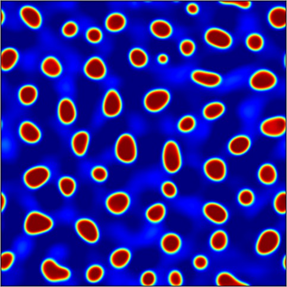 | r0 = 20 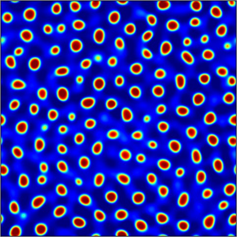 | r0 = 30 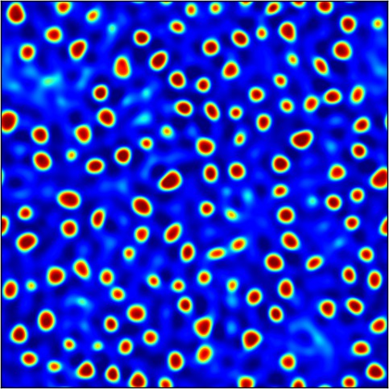 |
| r0 = 40 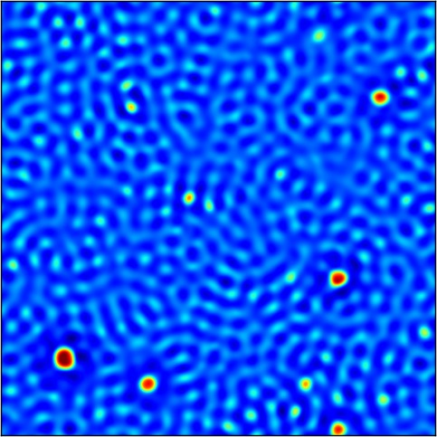 | r0 = 45 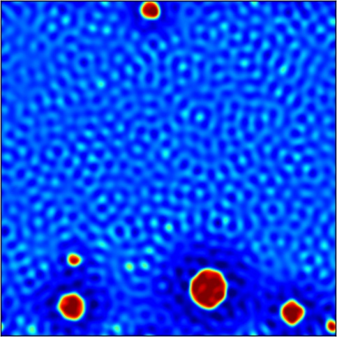 | r0 = 50 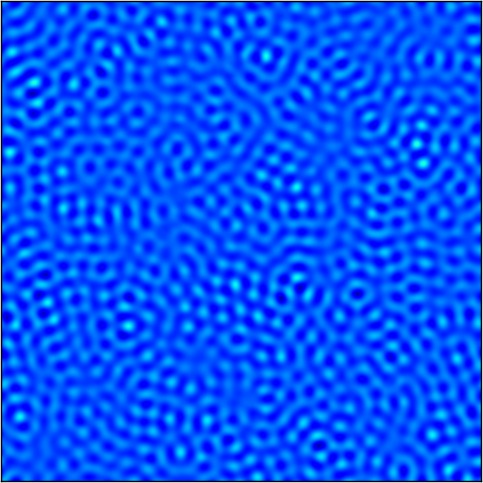 |
| r0 = 10 (early) 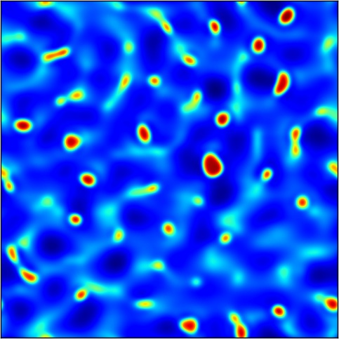 | r0 = 20 (early) 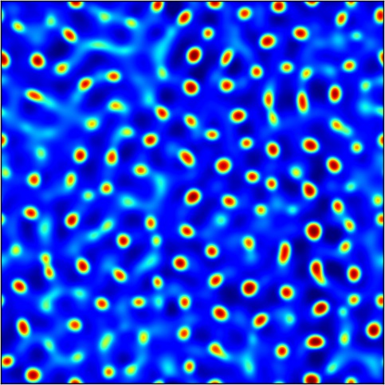 | r0 = 30 (early) 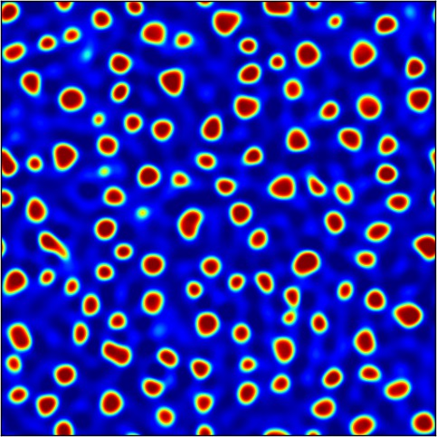 |
| r0 = 40 (early) 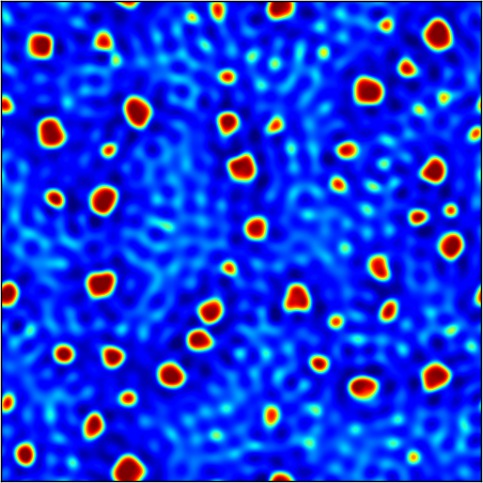 | r0 = 46 (early) 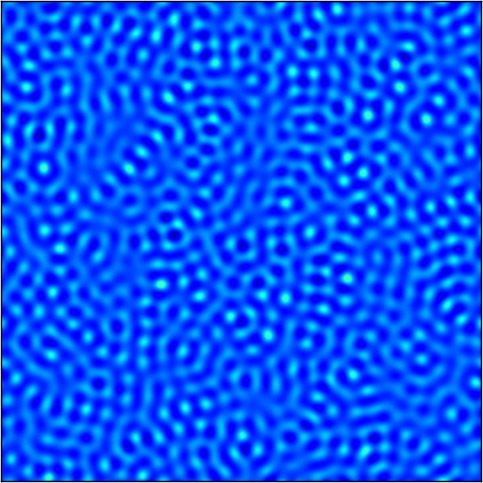 |